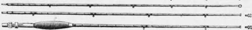
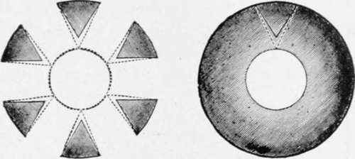
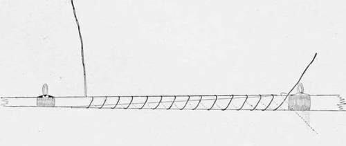

The Fishing-Rod, And Its Amateur Manufacture
Description
This section is from the book "American Game Fishes", by W. A. Perry. Also available from Amazon: American Game Fishes: Their Habits, Habitat, and Peculiarities; How, When, and Where to Angle for Them.
The Fishing-Rod, And Its Amateur Manufacture
The origin of the fishing-rod is lost in the mists of antiquity-and it is of not much consequence. It may be fishing tackle and how to make it.
interesting, however, to briefly note the difference between the "angle" described in the first "Treatyse of Fysshynge," and the wand-like rod so ineffably graceful and beautifully made, now to be seen on every hand. The fish in this country in the great majority are about the same in education as they were four hundred years ago, when the "Treatysse" was printed; but how changed the tackle! Listen to the following:
"Ye shall kytte, between wyghelmas and candlymas, a fayr staffe of a fadom and a-halfe long, and arme grete (thick as one's arm), of hazyll wylowe, or ashe (this is for the butt).
* * * "In the same season take a fayr yards of grene hazle (this is for the second joint); * * * Take a fayr shote of black thorn crab-tree, medeler, or of jenypie (this is for the tip). Then shave your staffe and make hym tapre wexe (wax taper)." "Hopes of yren"-hoops of iron-are to bind it for strength in place of the modern ferrule (vyrell) and there is no doubt the entire apparatus must have weighed several pounds. My split-cane Spalding, with which I have killed tons of fish during the past five years, weighs just seven ounces, fittings and all complete.
The present beautiful weapon is the evolved production of four centuries, and the survival of the fittest, unquestionably. The different types of rods may be here briefly enumerated:
(i) Rods for Top-water Fishing.-These are the finest productions of the rod-maker's art, as befits the use to which they are put, and are of several different classes of material. In my mind the best kind is that manufactured from the outer skin or enamel of the ordinary bamboo cane. This material is found to be tougher and lighter than any other wood as yet discovered, and it is detached from the cane in such a way as to admit of the greatest amount in the smallest compass when the rod is made. The process will be explained hereafter. It is sufficient here to say that the shape of the finished rod is commonly six-sided, it being contended that this shape admits of the most enamel to the least amount of inside wood-which is of practically no elasticity. The weapon, from butt to tip, is composed of strips cut from the large butts of the bamboo-cane. These are glued together, and whipped with silk at intervals, and are of course tapered perfectly to allow of the maximum of strength, lightness and resiliency.
The Trout-fly Rod is used usually in the single hand -that is, two hands are not taken to it for its manipulation. The reason for this probably is the fact that the rivers in which the Brook-trout is found are for the most part really brooks as to size, and the larger, heavier and longer fly-rod is not necessary to command the water. Hence the Trout-fly rod in ordinary use in America is seldom more than eleven feet long, and from three and one-fourth to ten ounces in weight. The three and one-fourth rod is admirably adapted for ladies, and the ten-ounce rod for gentlemen who prefer a heavy weapon, because of some inherited fancy; but I personally prefer a seven-ounce as the happy medium. One should be able to wield such a rod for weeks without undue fatigue: I have certainly done so.
It is difficult, if not impossible, to convey an accurate idea on paper, either by diagram or description, of the appearance of such a rod. Fig. I will give an idea of the proportion preserved, and the following are the measurements: length of each joint, three and one-half feet; diameter of handle, one inch; diameter just above swell of handle, six-sixteenths; diameter at point just below first ferrule, five-sixteenths; above first ferrule, five sixteenths; below second ferrule, three-sixteenths; above second ferrule, three-sixteenths; end of tip below terminal ring, three thirty-seconds of an inch.
Fig. 1.
Fig. 2 shows a section of the wood from which the rod is made, and the method of cutting it out. The dotted lines represent the shape of the strips when they are planed down to the proper angle for greatest strength.
The apparent fragility of this rod does not indicate its actual strength. I have, during five seasons, used mine on both Bass and Trout, and the largest Bass was six pounds. It is to-day as straight and strong as when I got it from the maker. There is nothing to be said against the solid-wood rod-if properly made. Several kinds of wood are in popular use, and the favorites, both in this country and England, are greenheart, blue mahoe, lance-wood and hickory. Occasionally one meets with ash, but it is seldom used, except for butts. Lance-wood and greenheart (bethabara I hold to be a species of greenheart, and very unreliable at that)-are the chief of these four, and may be said to be preferable above all the solid woods used in rod-making so far.
The split-cane Salmon-rod is but an enlarged edition of the split-cane Trout fly-rod. I have seen a very good specimen of the kind of rod used on the Restigouche. The specification of this rod was furnished to Mr. Chubb (Rod-maker, Port Mills, Vermont) by Dr. Baxter, weighs from twenty-five to twenty-eight ounces, and is composed of eight strips, therefore being octagonal. It is four-jornted, sixteen feet in length, and of course is very powerful and satisfactory.
Fig. 2.
For my own part I prefer a double-action, solid-wood greenheart rod, for Salmon, built on the "Castle-Connell" principle. Doubtless a little further explanation will be acceptable to the amateur. By double-action is meant a rod with rather exaggerated resiliency, insomuch that its tip, when striking a fish, first goes forward and then backward-i.e., its action is double. The "Castle-Connell" rods are also without ferrules, the joints being put together by splicing (see fig. 3); hence a most important feature, elasticity, is preserved along the 'entire length of the rod, and not interfered with by the unyielding ferrule. There is also in this rod considerable play in the butt-joint, which is not the case with the ordinary make. I have just received one from "Joe" Dalzell, of St. Johns, N. B.-the best Salmon-rod maker I know of, and with it a few of "Joe's" sentiments on spliced rods. He says-and I fully concur: "I think there is no rod like a spliced rod. Of course I have to make ferruled rods, but I 'cuss' when I come to put a strain on them, to see two stiff parts in the rod (the ferrules). In making my rods I glue them up the full length-sixteen feet, or whatever it may be -and then work all down together, so I am sure that every part of my rod works in unison. Rods that are made to gauge in separate pieces are not near so good, as you will find some parts of them more dense in grain, and other parts more open. By working all together you can make them act in unison-that is, each part of the rod docs its share of the work. I think you will find 2very part of my rods does its share of the work. I make it work from handle to tip. Most rods ire made with stiff butt. This is good enough for ts purpose-giving length. In a rod of that kind the fish is killed on the weakest part; in ny rod you kill him on the strongest. Also, n casting a line-if you get impetus from the resilient butt you can cast with less exertion, ind a smaller rod of this kind will do the work 3f a much larger one of the ordinary build."
Fig. 3.
Continue to:
- prev: Section VII. Bottom-Water And Bait Fishing
- Table of Contents
- next: The Fishing-Rod, And Its Amateur Manufacture. Part 2